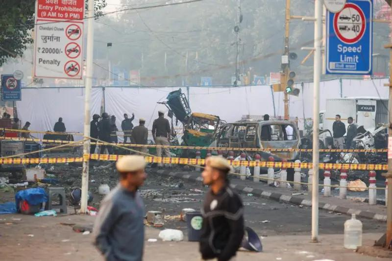

世界苦茶11月11日新闻 | 37条 | 美国联邦政府可能结束停摆

美国联邦政府可能结束停摆 | 中国日本就高市涉台言论激烈交锋 | META的AI首席科学家将离职 | 德里、yi si lan bao爆炸造成多人伤亡 | 7~9月外资企业对华直接投资环比下降51%
苦茶数据
美元兑人民币：7.12（昨日7.12，前日7.12）
美元兑日元：154.16（昨日153.82，前日153.54）
上证指数：4002（昨日3996，前日3997)
标普500指数：6832（昨日6728，前日6720）
比特币：104639（昨日105882，前日101656）
布伦特原油：64.48（昨日64.09，前日63.63）
中国新闻
• 香港牵头大湾区申奥。
首次由粤港澳三地共同举办的中国全国运动会，星期天在广州开幕。国际奥委会主席考文垂和终身名誉主席巴赫出席开幕式，并与中国国家主席习近平会面，推高部分舆论对粤港澳大湾区申办2036年奥运会的呼声。受访学者分析，粤港澳大湾区若成功申奥，不仅有利于提升大湾区国际形象，也有助于促进港澳与大陆融和新气象。香港若能牵头申奥成功，还能凸显拥有竞争对手新加坡所不具备的优势——中国大陆庞大腹地。国际奥委会预计将在2029年全会上，决定2036年奥运会主办城市。印度、卡塔尔、韩国、德国、土耳其、沙特阿拉伯和埃及已表示有兴趣主办。有香港智库今年也通过陆港媒体发文，呼吁香港牵头为粤港澳大湾区申办2036年奥运会。
• 北京抗议萧美琴在布鲁塞尔欧洲议会演讲。
台湾副总统萧美琴应友台组织对华政策跨国议会联盟邀请，在访问比利时期间于欧洲议会发表演讲。中国大陆驻欧盟使团批评，欧洲议会此举严重冲击中欧政治互信。据IPAC官网消息，萧美琴应IPAC欧盟联席主席莱克斯曼和古略塔邀请，星期五在布鲁塞尔欧洲议会举行的IPAC年会上演讲。这是台湾政府高层首次在欧洲议会发表演说。中国大陆驻欧盟使团在官网以答记者问的形式发文批评，欧洲议会不顾中方强烈反对和严正交涉，允许萧美琴等台独头面人物进入议会大楼出席年会并进行台独分裂活动，严重冲击中欧政治互信，“中方对此表示强烈愤慨、坚决反对，已向欧方提出严正交涉”。被北京称为“反华组织”的IPAC成立于2020年6月。
• 泰国法院下令将涉嫌网络赌博的头目引渡到中国。
泰国一家上诉法院周一批准将涉嫌运营200多家非法网络赌博平台的被告She Zhijiang引渡回中国。该中国公民可能是被捕的亚洲网络犯罪疑犯中最知名的人物，尽管中国曾逮捕并判处其他主要诈骗组织者死刑。She于2022年8月在曼谷被捕，依据的是中国警方2014年发出的逮捕令。目前他被关押在泰国首都的克隆普雷姆中央监狱。她的法律团队曾质疑泰国引渡法的合宪性，但上个月被驳回。周一的裁定要求在90天内将他送往中国。东南亚执法薄弱，尤其是柬埔寨和缅甸，网络犯罪在该地区猖獗。
• 高市首相就台湾表态后，日本与中国互相交锋。
在高市早苗就台湾问题发表讲话后，日本与中国周一爆发口水战。上个月当选为日本首位女性首相的高市上周五表示，中国若对台湾使用武力，可能构成“威胁日本生存的局面”，需要动用武力。此言在周末遭到北京强烈批评。中国驻大坂总领事薛健在X上发文称：“我们不得不毫不犹豫地斩断那条向我们扑来的肮脏脖子。你准备好了吗？”薛健还批评前首相安倍晋三及其他日本议员此前所说的“台湾有事就是日本有事”为“公然干涉中国内政、侵犯主权”，要求撤回并道歉。周一，日本内阁官房长官木原稔表示，东京已就薛健的X帖向北京提出抗议。
• 德媒关注：一名维吾尔人被遣返中国。
一名维吾尔人被遣返中国 2025年11月10日德国移民难民局决定，将一位新疆维吾尔女性遣返至土耳其。然而，下萨克森州有关部门却将她送上前往北京的飞机。她的女儿向公众求助。《明镜周刊》11月9日报道说，上周初，在德国获得难民保护的新疆维吾尔人Muyesser Obul在社交媒体上发布视频，讲述自己的母亲从德国被遣送回中国，并且无法联系上她。Muyesser Obul展示了母亲的护照图片，姓名Reziwanguli Baikeli，1969年6月2日出生于新疆。上周一，Baikeli从难民申请者居住地点被送上飞往中国的飞机，机上乘务员讲中文。上周二，她抵达北京国际机场。
• 世界领先的抗癌药物科学家林文彬加盟中国西湖大学。
世界领先的抗癌药物科学家林文斌加盟中国西湖大学。此举是在他于芝加哥大学为开发更有效的前沿疗法所作出杰出贡献之后进行的。很少有人能在三大领域同时出类拔萃，而作为一名肿瘤科医生的林文斌就是一个显着的例外。他不仅曾任芝加哥大学詹姆斯·弗兰克化学教授，还兼任该校放射与细胞肿瘤学系的成员。全球临床开发中的金属有机框架仅有两种，这两种都与癌症治疗相关，且都起源于林文斌自2013年起工作的芝加哥实验室。
• 伊藤洋华堂关闭成都华府大道店，中国仅剩7家。
伊藤洋华堂将于11月10日关闭位于中国四川省成都市的「食品生活馆 华府大道店」。受个人消费停滞及网上超市兴起等因素的影响，销售额持续低迷，因此决定关店。伊藤洋华堂正在调整中国业务，至此2025年已关闭3家店。将通过缩减亏损门市，加紧改善中国业务的收益。华府大道店于2018年11月开业，是食品、日用品、服装等商品一应具全的综合超市。伊藤洋华堂就关店原因解释称，是根据周边环境的变化及顾客到店情况，综合考虑了未来的业务方针。在消费趋势变化以及竞争环境加剧的背景下，该门市在开业约7年后闭店。
印太新闻
• 民进党批郑丽文“敌我不分” 国民党：民进党最早纪念共产党“烈士”。
台湾最大在野党、国民党主席郑丽文出席白色恐怖追思活动，追思对象包括中国大陆间谍吴石，引起争议。执政的民进党批评郑丽文“敌我不分”，国民党则回击指最早开始纪念共产党“烈士”的就是民进党。郑丽文上星期六出席由“台湾地区政治受难人互助会”举办的“1950年代白色恐怖秋祭追思慰灵大会”，争议延烧多日。民进党发言人吴峥、韩莹星期一召开“郑丽文敌我不分 配合统战共谍变烈士”记者会，批评国民党配合中共统战渗透，“严重混淆国家认同”“早已失去反共的DNA”，并称民进党才是台湾真正的“反共第一品牌”。吴峥指郑丽文事后辩称并未追思吴石，企图切割，但活动手册清楚载明，此次秋祭配合中国大陆电视剧《沉默的荣耀》。
• 台湾10月死亡多过出生人数 连续58个月“生不如死”。
台湾内政部公布最新人口统计，今年10月仅出生9458人，死亡人数近1.6万人，全台已连续58个月“生不如死”。据《工商时报》星期一报道，台湾内政部指出，今年10月有9458人出生，相比去年10月的出生人数大幅减少21.6％、少了2612个新生娃。10月死亡数为1万5908人，单月死亡比出生多了6450人，全台已连续58个月“生不如死”。此外，台湾总人口已连续22个月下滑，从自2023年底的2342万人一路降至2331万人。观察整体人口结构，截至10月底，全台65岁以上老年人口数续增至463.7万人，占比已达19.9％，而幼年人口占比仅11.55％，工作年龄人口也不及七成，约1597万人。
• 德里红堡附近一辆汽车发生爆炸，至少8人死亡。
当局称，德里历史悠久的红堡附近发生汽车爆炸，已造成至少八人死亡，多人受伤。德里市警方发言人桑杰·塔亚吉向BBC确认了死亡人数，并表示另有约20人受伤。警方正在调查爆炸原因，“正在排查一切可能性”，塔亚吉说。德里警察专员萨蒂什·戈尔查对记者表示，事件发生在当地时间约18:52，一辆缓慢行驶的车辆在红灯处停下后发生爆炸，爆炸波及并损坏了附近车辆。塔亚吉告诉BBC，爆炸发生在一辆行驶中的现代i20汽车上，车上当时坐有三人。印度金融中心孟买以及与德里相邻的北方邦已提高戒备。爆炸地点靠近红堡附近的一座地铁站。红堡是德里最知名的地标之一，每天有数千名游客前来参观。
• 高市政府首份经济对策瞄准AI等17领域。
日本经济新闻11月8日获悉了日本高市早苗政府将在月内敲定的经济对策的重点措施。高市政府计划以人工智慧和生物等17个战略领域为中心，通过「大胆减税」促进设备投资。还将纳入多个年度的预算措施，提高可预见性，吸引民间投资。在日本政府于11月10日召开的「日本增长战略会议」上，日本首相高市将阐明方向。将宣布加强有望增长的产业领域的供应链这一方针。计划在增长战略会议上采纳专家意见。高市内阁首次制定的经济对策的特点是，除了应对当前的物价上涨和美国川普政府的关税措施之外，还将提前实施增长战略的计划项目。
• 高市在国会提台湾有事触「存亡危机事态」。
日本首相高市早苗11月7日在国会上明确表示，如果台湾遭受武力攻击，触发日本可行使集体自卫权的「存亡危机事态」可能性高。日本历届政府始终仅在私下进行相关讨论，在国会等公开场合对具体情景的提及则持谨慎态度。
• 东日本旅客铁路公司宣布，将于2026年秋为其发行的Suica交通卡增设二维码支付及汇款功能。
并提高支付额度，使其从交通票证扩展为可在车站商业设施进行高额消费的支付工具，以应对PayPay等无现金服务的竞争。该公司同时表示，旗下交通卡使用逾25年的吉祥物形象Suica企鹅将在2026年度末“毕业”，新吉祥物尚未确定。Suica交通卡自2001年推出以来，发卡量已突破 1 亿张。由坂崎千春创作的企鹅形象长期作为吉祥物，衍生出大量周边商品与专门店。
**• 巴基斯坦首都伊斯兰堡地方法院外11月11日发生自杀式炸弹爆炸，造成至少12人死亡、27人受伤。 **
警方称，爆炸由一名自杀式炸弹袭击者实施。内政部长称，袭击者试图进入法院未果，随后在一辆警车旁引爆了炸弹。目前尚无任何组织声称对爆炸负责。内政部长称，正在全面调查此次袭击。
**• 泰柬边境的四色菊府11月10日上午发生地雷爆炸，两名泰国士兵受伤。 **
泰国总理阿努廷指示有关部门考虑向东盟临时观察团抗议柬埔寨，并决定暂停执行泰柬和平联合声明。此外，原定于12日释放柬埔寨被俘人员的计划也将暂停。
科技新闻
• 美议员指责AI热潮推高电价 要求白宫解决。
美国佛蒙特州参议员伯尼·桑德斯及多名民主党参议员最新致信白宫，要求其就居民电费上涨作出解释，他们认为部分原因是AI热潮所带来的数据中心建设。桑德斯与参议员理查德·布卢门撒尔等人于周一致信白宫及商务部长卢特尼克，敦促政府说明将如何缓解数据中心扩张对电价及相关成本的影响。信函矛头直指Meta、OpenAI、Alphabet、Oracle等科技巨头，称这些公司主导的数据中心建设项目已从华盛顿郊区蔓延至俄勒冈州乡村地区。议员们警告，特朗普政府加速审批的做法，正在迫使普通美国人与“身价万亿的科技公司为家中用电展开竞价战”。
• Meta首席人工智能科学家Yann LeCun将离职。
据知情人士透露，Meta首席人工智能科学家Yann LeCun已告知同事，将在未来几个月内离开这家社交媒体巨头，创立自己的初创公司继续研究世界模型。这位法裔美国籍图灵奖得主被认为是现代人工智能的先驱之一，他目前正在就新项目的融资事宜进行初步洽谈。LeCun即将离职之际，Meta的创始人正在调整公司的人工智能战略，扎克伯格放弃了Meta基础人工智能研究实验室（FAIR）的长期研究工作（该实验室自2013年以来一直由LeCun领导），转而专注于更快地推出模型和人工智能产品。今年夏天，扎克伯格聘请28岁的数据标注初创公司Scale AI的创始人Alexandr Wang领导Meta新成立的“超级智能”团队，此前向首席产品官Chris Cox汇报工作的LeCun，现在向 Wang 汇报工作。
经济新闻
• 7~9月外资企业对华直接投资环比下降51%。
中国国家外汇管理局11月7日发表的7
9月国际收支数据显示，外资企业的直接投资净流入85亿美元。虽然有新建工厂等新增投资，但持续处于低水准。经济放缓导致增长预期减弱，外资的投资意愿也在下降。7
9月外资直接投资比4
6月减少51%。按季度计算与达到峰值的2022年1
3月相比减少92%。与疫情导致混乱的2022年4
6月相比大幅下降，持续低迷。中国经济正在放缓。7
9月实际国内生产总值同比增长4.8%，涨幅与4~6月的5.2%相比有所缩小。房地产不景气导致内需不足，消费和投资相对低迷。
• 资生堂预计2025财年创史上最大亏损。
11月10日，资生堂发布2025财年的合并净亏损将达到520亿日元，创下自采用国际会计准则以来的最大亏损纪录。此前公司曾预计可实现60亿日元的盈利，如今大幅下调至转为亏损，预计将连续两年陷入赤字。主要原因是美国业务计入了468亿日元的减值损失。资生堂旗下美国护肤品牌 「Drunk Elephant」 表现持续低迷，导致美国业务的盈利能力下降。资生堂将因此计入468亿日元的商誉减值损失。该品牌于2019年以约900亿日元被资生堂收购。随着新兴品牌竞争加剧，加之2024年因生产故障导致供应混乱，顾客进一步流失。
• 中国暂停对美船舶收取特别港务费。
中国官方宣布暂停对美国船舶收取特别港务费，与华盛顿暂停对中国造船业301调查同步实施，成为两国紧张关系缓和的又一迹象，双方正持续细化落实元首会晤共识。中国交通运输部星期一在官网公告，为落实中美吉隆坡经贸磋商达成共识，即日起暂停对美船舶收取船舶特别港务费、暂停开展航运业造船业及相关产业链供应链安全和发展利益受影响情况调查，为期一年。公告说明，这项举措“与美方暂停实施对华海事、物流和造船业301调查最终措施同步”。去年3月，美国五个全国工会提交301条款请愿书，要求调查中国为在海事、物流和造船领域占据主导地位，而采取的行为、政策和做法。
• FBI局长访华谈芬太尼后 中国收紧易制毒化学品对美出口。
中美元首会晤达成共识后，美国联邦调查局局长帕特尔据报上周访华讨论芬太尼和执法问题。中国官方随后公告，向美墨加出口13种易制毒化学品需申请许可。路透社引述知情者报道，帕特尔上星期五飞抵北京，停留约一天，在上星期六与中国官员举行会谈。帕特尔的访华行程未获中美官方公布。针对中国能否确认帕特尔访华的提问，中国外交部发言人林剑星期一在例行记者会上回应说：“我不掌握你提到的情况。”中国公安部和美国驻华大使馆则未回应置评请求。不过，中国商务部星期一公告，为进一步做好易制毒化学品出口管理工作，决定对《向特定国家出口易制毒化学品管理目录》《特定国家目录》进行调整，将美国，墨西哥，加拿大增列入《特定国家目录》。
• 随着中国更多地区进入“中度老龄化”，其经济将如何变化。
随着人口老龄化加剧，中国大部分地区已跨过关键人口门槛，政策制定者和企业需要做出相应调整。清晨，在中国各城市的广场上，人们成群结队，缓慢而有节奏地打太极。他们中许多人已步入六七十岁——这一个年龄群长期以来在中国许多地区决定着日常生活的节奏。截至去年，全国30多个省级区域中有20个已进入人口学家所称的“中度老龄社会”，即65岁及以上居民占比至少达到14%，或60岁以上占比达五分之一。根据当时中国国家统计局的数据，2018年只有辽宁，上海，山东，四川，江苏和重庆六个地区达到这一门槛。这个趋势，加上生育率持续下降，意味着劳动年龄人口也在减少。
• 中国拒绝为巴西这一关键雨林基金提供支持。
有报道说，中国暂时不会为巴西雨林保护基金提供资金，指出富裕国家支持不足：北京表示富裕国家应承担更多责任，正值卢拉准备在南非金砖峰会向习近平亲自呼吁之际 据报道，中国目前已拒绝向巴西的旗舰雨林保护机制提供财政贡献，理由是发达国家应在全球气候融资中发挥主导作用。参与谈判的人士称，中国谈判代表对巴西同行表示，北京原则上支持该基金，但援引了“共同但有区别的责任”原则。该概念自1992年被写入联合国气候框架以来，认为富裕国家应承担主要的融资和减排责任，因为它们的繁荣建立在化石燃料之上。长期以来，这一论点一直主导中国在国际气候谈判中的立场。
• 德国将表决成立专门委员会审查德中经济关系。
2025年11月10日德国黑红执政联盟计划成立一个委员会，专门审查与中国的贸易关系。联邦议院最早将于本周五就有关提案进行辩论和表决。由联盟党和社民党组成的德国联合政府希望更密切地审视与中国之间贸易关系，并将为此成立一个专门委员会。本周初，基民盟/基民盟和社民党议会党团将在各自的委员会中讨论这项联合动议。联邦议院计划于本周五就此动议进行辩论和表决。据悉，该动议提出的背景是基于“贸易和地缘政治环境”的变化，涉及到价值链的安全性和可靠性以及德国能源和原材料进口。专门委员会将负责调查“德中之间与安全相关的经济关系”以及其他国家与中国之间的经济关系。
• 中国进口商在贸易博览会上签署创纪录的835亿美元交易。
中国进口商在进博会上签约创纪录的835亿美元，因美中贸易停火提振信心 在刚刚结束的进口博览会上，成交额创下835亿美元的纪录，比去年同期增长4.4%，反映出对中国消费支出的信心。主办方中国国际进口博览局表示，这一总额是这一为期六天的年度活动连续第五年创下新高。“中资企业增加了对本地消费者渴望和需要的外国产品采购，”上海金融咨询公司诚信顾问丁海峰说。“世界两大经济体之间的贸易协议让外国制造商和本地商家在达成交易时更有信心。” 中国国际进口博览局隶属商务部，称这些合同为初步合同，部分交易可能未最终敲定。许多合同是在11月5日展会开幕前预先签订的。
• 受特朗普影响的英国在加密货币政策上的大转变。
伦敦——英国的金融监管机构在加密货币领域经历了一段旅程——在某种程度上还受到了唐纳德·特朗普的推动。英格兰银行周一公布了其期待已久的稳定币规则。两年前，该央行行长安德鲁·贝利曾将这种理论上更稳定的加密货币斥为“不是货币”，如今其规则手册预计将受到一直积极游说、希望重新评估的行业的谨慎欢迎。这将标志着英国央行立场的重大转变。
• 中国人口最多省份的大规模补贴计划未能吸引消费者。
为了振兴经济，这一中国省份推出了有史以来规模最大的消费补贴计划，但消费者反应冷淡。今年11月上旬，中国人口最多的省份推出了有史以来最大的一次消费补贴计划，政府承诺投入35亿元人民币，为一系列商品提供折扣：从智能手机到单板滑雪板。但在实际操作中，这一大型新政反响平平。广东当地居民告诉邮报，补贴不太可能说服他们增加支出——尤其是非必需品。尽管有高额的宣传数字，实际发放的代金券往往并未带来有吸引力的折扣。他们还表示，面对不确定的经济和动荡的就业市场，很多消费者仍保持谨慎。广东的新补贴计划于11月3日以隆重方式启动，将持续到明年3月。
• 汉堡王中国也被卖了 CPE源峰将持股约83%。
CPE源峰与汉堡王品牌达成战略合作，双方将成立合资企业汉堡王中国。CPE源峰将向汉堡王中国注入3.5亿美元的初始资金，用于支持其餐厅门店扩张、市场营销、菜单创新以及运营能力提升。汉堡王中国旗下全资关联企业将签署一份为期20年的主开发协议，该协议将授予其在中国独家开发汉堡王品牌的权利。交易完成后，CPE源峰将持有汉堡王中国约83%的股权，持有汉堡王品牌的餐饮品牌国际集团将保留约17%的股权。根据整体规划，双方计划将汉堡王在中国市场的门店规模从目前的约1250家，拓展至2035年的4000家以上，并实现可持续的同店增长。
俄乌战争
• 泽连斯基表示，乌克兰正寻求订购27套“爱国者”防空系统。
泽连斯基在11月9日刊登于卫报的采访中表示，乌克兰希望向美企订购27套爱国者防空系统，同时在此期间正寻求从欧洲盟友处借用这一关键系统。随着冬季临近，近年来数周来俄罗斯对乌能源基础设施的打击加剧。11月8日夜间基础设施遭到袭击后，乌克兰国有能源公司Centrenergo运营的所有火力发电厂均已停运。另一方面，乌方官员11月9日报道称，俄罗斯的袭击在24小时内导致顿涅茨克和赫尔松州共有3人死亡，至少18人受伤。泽连斯基指出，尽管盟友提供了支持，但只要俄罗斯对乌战争持续，额外援助的需求就永远存在，并补充说俄罗斯总统普京需要停止战争。“永远不够。只有战争结束时才够。
世界新闻
• 名为“TRUMP”的极右翼政党在比利时成立。
唐纳德·特朗普有时可能把自己视为“欧洲总统”，因为他对布鲁塞尔政策有巨大影响，但即便如此，他也不会想到自己会出现在该市的选票上。比利时一家极右翼法语党派最近成立，该党通过曲折的首字母缩略词以美国总统的名字命名，地方媒体BRUZZ周一报道。TRUMP的创始人、比利时国家阵线前主席萨尔瓦托雷·尼科特拉对该网站说：“唐纳德·特朗普是民粹主义的终极象征。他立即体现了我们的立场。
• 在圣彼得广场发生被指控的反犹事件后，梵蒂冈对瑞士卫队展开调查。
梵蒂冈周一表示，正在调查一起可能的反犹事件，据称一名瑞士卫队在圣彼得广场入口处对两名犹太女性做出了吐口水的轻蔑手势。该事件据称发生在10月29日的一场教皇接见活动期间。当日的接见旨在纪念1965年关于教会与犹太人及其他非基督徒关系的声明周年。事发时被指为受害者的是一支参加教皇接见的国际犹太代表团成员，教皇利奥十四在接见中重申了天主教与犹太关系，并誓言抗击反犹主义。涉事者之一，以色列作家兼剧场导演米哈尔·戈夫林在给美联社的一份书面声明中说，事件发生在她与一位同事作为国际犹太代表团成员从圣彼得广场的侧入口经过时。
• 最高法院驳回要求推翻其将同性婚姻在全国范围内合法化裁决的请求。
最高法院周一驳回了要求推翻其具有里程碑意义的裁决的呼吁。大法官们未作解释，驳回了前肯塔基州法院书记官金·戴维斯的上诉。2015年高院在奥贝格费尔诉霍奇斯案裁决后，戴维斯曾拒绝向同性伴侣发放结婚证。她一直试图让最高法院推翻下级法院要求她向一对被拒发结婚证的夫妇支付36万美元赔偿及律师费的命令。最高法院已驳回了推翻其使同性婚姻在全国合法化的里程碑式裁决的请求。以下是相关要点。她的律师反复援引了克拉伦斯·托马斯大法官的话。托马斯是九位大法官中唯一公开主张撤销同性婚姻裁决的人，2015年共有四位大法官对此裁决提出异议。
• 美国政府关门四十天见曙光 参院投票破僵局。
025年11月10日美国政府停摆影响扩大，参议院9日终于在新一轮的投票中打破僵局，推进一项妥协法案，把政府资金延长到明年1月，并撤销特朗普政府早前开除联邦雇员的决定。周日，美国参议院针对一项临时拨款法案进行程序性投票，最终以60票支持对40票反对的结果通过。其中，有七名民主党参议员和一名无党籍参议员改变先前的立场，转向支持该法案，推进了让美国政府重启的关键一步。（翻評：靠，在醫保上沒有進展，為什麼要重開？）
• 在一夜突破后，美国参议院将就结束历史上最长的政府停摆的协议进行辩论。
旨在结束史上最长政府停摆的协议在美国参议院获得通过，一项旨在结束美国政府停摆的协议在参议院获得通过，为打破这一创纪录的僵局铺平了道路。经过周末在华盛顿的谈判，一部分民主党参议员与共和党人一道投票支持该协议。此次投票是自10月1日政府资金耗尽以来，朝通过一项为政府提供资金的妥协方案迈出的程序性第一步。该议案仍需越过多个障碍——包括众议院的投票——才能让联邦雇员和服务恢复，但在40天僵局后，这是首个正式的进展信号。参议院预计将于周一当地时间11:00继续辩论。当前的停摆是美国有记录以来最长的，在本周末之前，共和党和民主党立法者似乎长期陷入僵局。自10月以来，许多政府服务被暂停。
• 在一个加密群聊中，国民警卫队成员质疑特朗普的部署。
在一个加密群聊中，国民警卫队成员质疑特朗普的部署 随着特朗普总统呼吁在全美部署国民警卫队，一小部分俄亥俄州的警卫队员在一个加密群聊中悄然表达了他们的担忧。政府今年夏天开始向几座民主党执政的城市派兵，理由是需要打击暴力犯罪并保护联邦移民设施。现在，这些俄亥俄州的警卫队员表示，他们对国家的发展方向感到震惊，甚至开始质疑自己可能在其中扮演的角色。“当他们把部队派到，后来又到，现在又到芝加哥时，我真的陷入了一个黑暗的地方。这根本不是我们任何人报名参军时所期待的，也远远超出了正常行动的范畴，”俄亥俄国民警卫队的一名成员J对NPR在匿名条件下表示。
• 传统基金会从“让美国再次伟大”转向“让欧洲再次伟大”。
支持唐纳德·特朗普“2025项目”路线图的保守派智库正在寻找跨大西洋的新盟友。作为这份已成为特朗普二任期关键政策手册的922页蓝图的智识引擎，传统基金会正与一系列欧洲民族主义极右翼运动合作，试图输出其应对进步政策的行动纲领。10月下旬，该基金会在已粉饰壁画的已故总理贝卢斯科尼位于罗马的旧居举办了一场会议，聚焦欧洲的人口危机以及出生率下降威胁西方文明的论调。发言者包括传统基金会国内政策副总裁、在美国主导推进收紧堕胎权运动的罗杰·塞维里诺，以及意大利支持生命家庭部长尤金妮娅·罗切拉、参议院副议长和意大利右翼智库成员。
• 奥尔班指望特朗普像阿根廷那样出手，挽救他免遭选举败局。
匈牙利迅速崛起的反对派要求总理维克多·欧尔班说明他暗示已从美国总统唐纳德·特朗普那里争取到的一项“救助方案”。长期与特朗普关系密切的欧尔班上周赴华盛顿会见了这位美国领导人。返回布达佩斯时，这位民粹主义—民族主义的匈牙利总理对随行团队表示，美国已同意为布达佩斯提供“金融保护伞”。